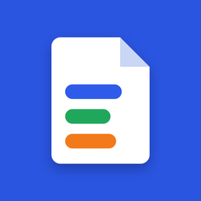
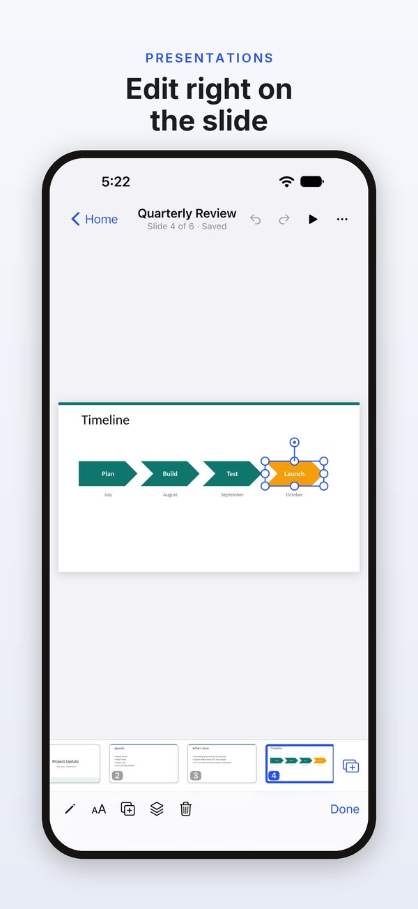
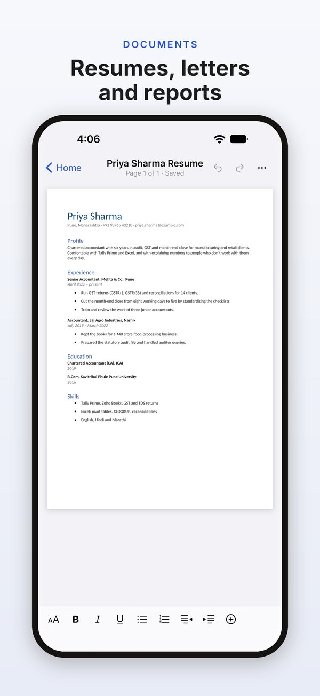
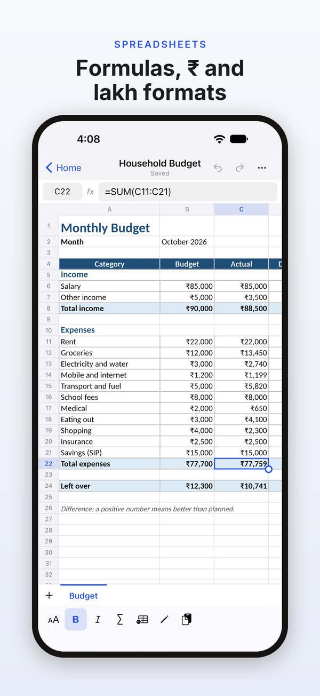
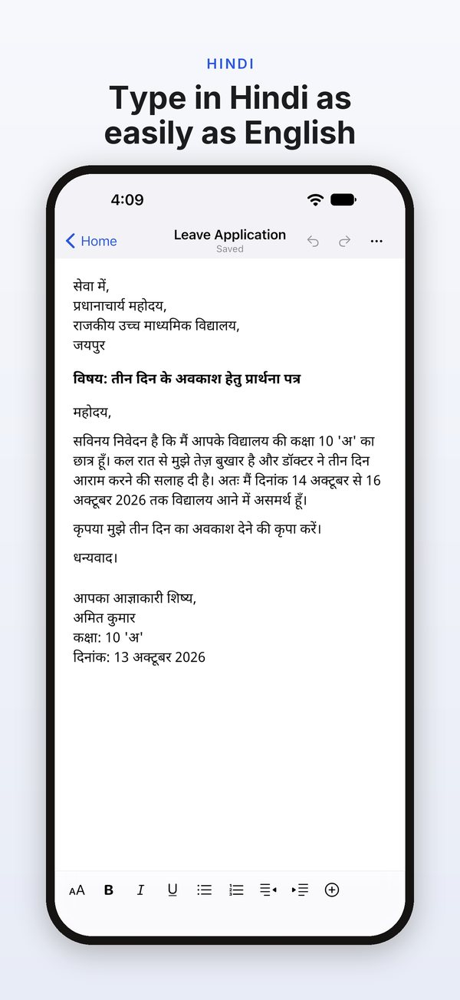

Documents
Real pages or Mobile View; styles, headings, lists, pictures and tables; find, word count and a headings list.

DocOffice opens, edits and saves .docx, .xlsx and .pptx files on your iPhone, iPad, Mac or Android device. Your edits save back into the same file and format, and nothing is uploaded.
DocOffice is free to open, edit, save, print and share. DocOffice Pro adds page setup, headers and footers, find & replace, custom number formats, paste special, more shapes and slide tools, clean PDFs and all templates: yearly with a 7-day free trial, or a one-time Lifetime purchase.




Real pages or Mobile View; styles, headings, lists, pictures and tables; find, word count and a headings list.
Formulas with hundreds of functions, rupee and lakh formats, freeze panes, sort and fill. CSV too.
Edit text on the slide; add text boxes, shapes and pictures; reorder and hide slides; play full screen.
Type in Hindi with the keyboard you already use; Hindi text lays out and prints correctly.
A formal letter, a monthly budget and a project update, plus Pro templates: a resume, a Hindi leave application, a GST invoice and a pitch deck.
Edits go back into the same .docx, .xlsx or .pptx file, keeping everything DocOffice doesn’t edit exactly as it was.
Mobile View for documents, a formula bar and accessory bar for sheets, and slides that zoom in when you type.
A formatting toolbar, a slide strip beside the slide and speaker notes under it.
A resizable window, a sidebar of recent files and templates, and keyboard shortcuts.
Phone, tablet and foldable layouts: fold or unfold mid-edit and keep going.
DocOffice is an office app for iPhone, iPad, Mac and Android. It opens, edits and saves documents, spreadsheets and presentations in the Word, Excel and PowerPoint file formats (.docx, .xlsx and .pptx), right on your device.
There are no ads, no account and no tracking. Opening, editing, saving, printing and sharing files are free, and DocOffice Pro adds more tools.
iPhone and iPad with iOS or iPadOS 16 or later, Macs with macOS 13 or later, and Android phones, tablets and foldables with Android 7.0 or later.
Each device gets its own layout. iPhone has Mobile View for documents and a formula bar for sheets. iPad has a formatting toolbar and a slide strip. On a Mac, DocOffice works in a resizable window, with a menu bar and keyboard shortcuts. On Android, you can fold or unfold mid-edit and keep going.
DocOffice opens and saves documents (.docx), spreadsheets (.xlsx and .csv) and presentations (.pptx).
You can also start a new blank document, spreadsheet or presentation, or start from a template. New documents use A4 or Letter paper, whichever you choose in Settings.
DocOffice doesn't open the older .doc, .xls and .ppt formats, or password-protected files.
Yes. DocOffice saves your edits back into the same file, in the same .docx, .xlsx or .pptx format, and keeps everything you didn't change exactly as it was. Its saved files are checked against Microsoft's own Open XML file validator.
The parts DocOffice doesn't edit, such as charts and SmartArt, are kept exactly as they were.
DocOffice isn't made by or affiliated with Microsoft.
DocOffice saves your edits a few seconds after you stop, back into the file you opened. You can undo changes while you work.
If DocOffice isn't allowed to change the original file, it offers to save a copy in its own folder instead.
In DocOffice, tap Open on Home and choose a file with your device's file picker. On a Mac, File › Open works too.
You can also start in another app: open or share a .docx, .xlsx, .pptx or .csv file from the Files app, Finder or another app, and choose DocOffice. If you hand over several files at once, the first opens and the rest wait in Recents.
DocOffice saves your edits back where the file is, or offers to save a copy if it can't.
Files you create in DocOffice are kept in its own folder on your device. Files you open from elsewhere stay where they are, and your edits are saved there.
Nothing is uploaded. DocOffice has no servers that hold your files, so we can't see, read or recover them. It sends a file somewhere only when you share, export or print it.
Uninstalling DocOffice removes its folder from that device, so share or export files you want to keep first. Your device's backup, if it's on, can include that folder.
No. DocOffice has no account and no servers, so it doesn't sync files or store them online.
To work on a file on another device, share it to yourself or save a copy somewhere you can reach from that device, then open it in DocOffice there.
No. There's nothing to sign up for or log in to. If you buy DocOffice Pro, the purchase goes through your App Store or Google Play account.
Yes. Opening, editing and saving files work without an internet connection. Buying or restoring DocOffice Pro needs a connection to the App Store or Google Play.
Free: opening, viewing, editing, saving, printing and sharing every file, PDF export with a small "Made with DocOffice" line, blank files and three templates.
In documents, DocOffice Pro adds page setup (A4, Letter or Legal paper, orientation and margins) and headers and footers with page numbers. In spreadsheets, it adds custom number formats and paste special. Find and replace works in both. In presentations, Pro adds shape outlines, align to slide, 25 more shapes, notes pages and slides as pictures. It also removes the PDF line and unlocks all templates.
DocOffice Pro comes two ways. Yearly is a subscription with a 7-day free trial if you haven't subscribed before. Payment is taken when the trial ends, and the subscription renews each year until you cancel. Lifetime is a one-time purchase, with nothing to renew. There's no monthly plan.
The app and the store show the price before you confirm. On iPhone, iPad and Mac, one purchase unlocks Pro on all three.
On iPhone, iPad or Mac, cancel in your Apple Account settings at least 24 hours before the end of the current period, or the subscription renews automatically. On Android, cancel in Google Play › Payments & subscriptions.
A free trial works the same way: payment is taken when it ends unless you cancel in time. Lifetime is a one-time purchase, so there's nothing to cancel. If you buy Lifetime while a yearly subscription is active, cancel the subscription too, so it doesn't renew.
DocOffice has no account, so it asks the store you bought from. Sign in to the App Store or Google Play with the account you bought with. Then go to Settings › DocOffice Pro › Restore Purchases, or tap Restore Purchases on the Pro screen.
A purchase from the App Store unlocks Pro on iPhone, iPad and Mac. A purchase from Google Play unlocks it on Android. The two stores are separate, so a purchase in one doesn't unlock the other.
When you start a free trial, DocOffice asks whether you'd like a reminder. If you tap Remind Me, it schedules one notification on your device, two days before the trial ends, so you can decide whether to keep Pro.
The reminder is optional. It's the only reason DocOffice asks to send notifications, and you can turn it off in your device's settings.
Yes. Type in Hindi with the keyboard and input methods you already use. Hindi text lays out and prints correctly.
DocOffice 1.0 is tested for typing in English and Hindi. With DocOffice Pro, there's also a ready-made leave application in Hindi to start from.
Three templates are free: a formal letter, a monthly budget (budget against actual, in rupees) and a project update presentation. DocOffice Pro adds a one-page resume, a leave application in Hindi (अवकाश प्रार्थना पत्र), a GST tax invoice with CGST and SGST, and a pitch deck (problem, solution, market, team). Blank documents, spreadsheets and presentations are free too.
A template opens as a new file in DocOffice's folder. You edit and save it like any other .docx, .xlsx or .pptx file.
You can export any document, spreadsheet or presentation as a PDF. PDFs from the free version carry a small "Made with DocOffice" line. DocOffice Pro removes it.
In this version, PDF pages are saved as pictures of your pages, so the text in a PDF can't be selected. Hidden slides are left out of a presentation's PDF. With Pro, you can also export notes pages, which show each slide with its speaker notes.
Yes. Printing is free for every file, and it uses your device's own print dialog.
Two print tools are part of DocOffice Pro: notes pages, which print each slide with its speaker notes, and page setup, which changes a document's paper size, orientation and margins.
They're kept. DocOffice saves them back unchanged, so they're still there when you open the file in another app.
In this version, DocOffice shows charts and SmartArt as labelled boxes. It can't edit them, and it can't add new charts.
DocOffice shows a document with tracked changes as its final text, as if the changes had been accepted.
It doesn't accept or reject changes, and it keeps them in the file when it saves. You can still review them later in an app that supports tracked changes.
Those are the older Word, Excel and PowerPoint formats. DocOffice opens the newer .docx, .xlsx and .pptx formats, and .csv.
Open the file in another app that reads the old format, save it in the newer format, then open it in DocOffice. If an old-format file has been renamed to end in .docx, .xlsx or .pptx, DocOffice spots it and gives the same advice.
Not yet. If a file is protected with a password, DocOffice tells you it can't open it.
Remove the password in the app the file came from, then open it in DocOffice.
DocOffice itself collects nothing: we receive no data about you or how you use DocOffice, and there are no ads, no account, no tracking and no analytics.
On Android, purchases go through Google's Play Billing Library, which Google Play requires. It sends Google diagnostic logs about its own operation (for example, whether its requests to Google Play succeed). Those go to Google, not to us, and DocOffice's Google Play listing declares them. The iPhone, iPad and Mac apps don't include that library.
Apple or Google handles payments, and DocOffice doesn't see your card or payment details. The app only learns what you own, so it can unlock Pro, and keeps that on your device.
If you add an author name in Settings, DocOffice writes it into files you create, so people you share them with can see it.
Email wekstuff@gmail.com, or go to Settings › Contact Support in the app, which starts an email with the app version in the subject line.
It helps to say which device you use and what happened. If a file opens or saves wrongly, say what kind of file it is. We use your email only to reply to you, and we don't add it to any list.
In the app, go to Settings › Contact Support: it starts an email with the app version filled in. Or write to wekstuff@gmail.com. Tell us which device you use and what happened.
Your email is used only to reply to you.